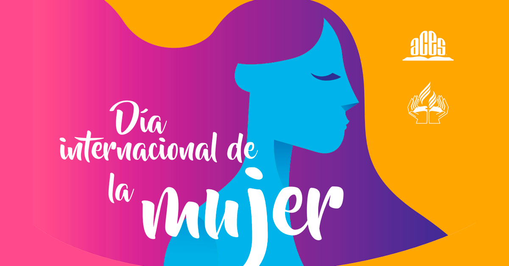
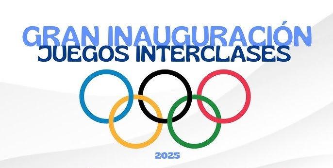
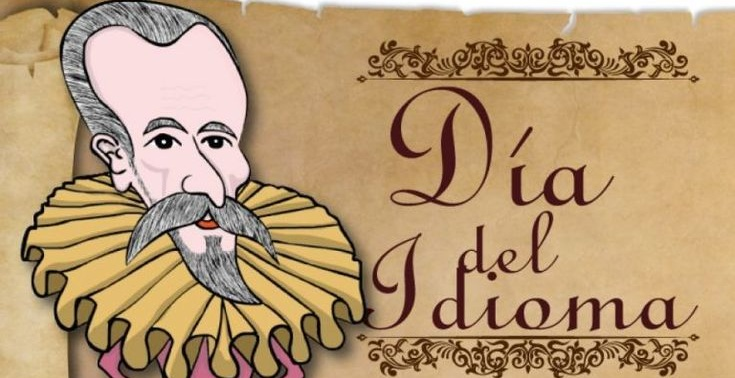
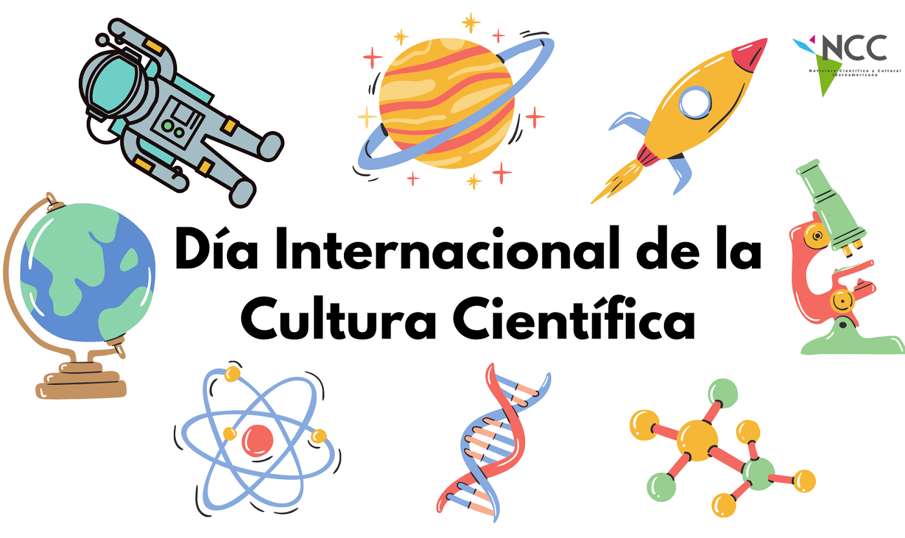
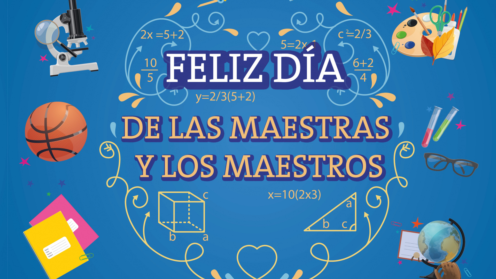
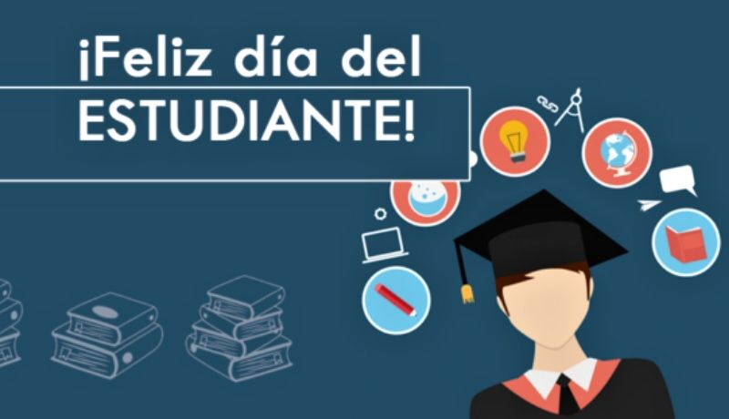

En I.E.D Talento Tech, creemos firmemente que la educación es el motor del cambio y la innovación. Somos un centro de formación comprometido con el desarrollo integral de nuestros estudiantes, a través de una propuesta pedagógica moderna, inclusiva y orientada al futuro.
Nuestro enfoque en la Innovación Educativa Digital nos posiciona como una institución vanguardista, donde la tecnología, el pensamiento crítico y la creatividad se integran en cada experiencia de aprendizaje. Formamos ciudadanos digitales responsables, preparados para enfrentar los retos de un mundo en constante transformación.
Contamos con un equipo docente altamente calificado, espacios de aprendizaje flexibles, recursos tecnológicos de última generación y programas académicos que promueven la investigación, la ciencia, el arte y la cultura digital.
En Talento Tech, potenciamos el talento de cada estudiante, guiándolos para que sean líderes, emprendedores y agentes de cambio en su comunidad.
Talento Tech: donde la educación se transforma, la tecnología inspira y el futuro comienza hoy.
MISIÓN
La I.E.D. Talento Tech-Innovacción Educativa Digital tiene como misión formar estudiantes íntegros, críticos y creativos, a través de una educación de calidad centrada en el uso estratégico de las tecnologías digitales, la innovación pedagógica y el desarrollo del talento humano. Buscamos potenciar las competencias del siglo XXI, fomentando valores, pensamiento científico y conciencia social, para que nuestros egresados transformen su entorno de manera ética y sostenible.
VISIÓN
En el año 2030, la I.E.D. Talento Tech-Innovacción Educativa Digital será reconocida a nivel nacional como una institución líder en innovación educativa, transformación digital y formación de ciudadanos globales. Seremos un modelo de referencia por nuestras prácticas pedagógicas disruptivas, el uso responsable de la tecnología y el compromiso con la equidad, la inclusión y la excelencia académica.
VALORES
- Innovación
Fomentamos la creatividad, el pensamiento disruptivo y la búsqueda constante de nuevas formas de enseñar y aprender, integrando tecnologías que transforman la educación.
- Excelencia
Promovemos altos estándares académicos, pedagógicos y éticos, con el compromiso permanente de mejorar y superar nuestras metas institucionales.
- Equidad e Inclusión
Valoramos la diversidad y garantizamos espacios de aprendizaje accesibles, respetuosos y justos para todos, sin distinción de género, cultura, capacidad o condición social.
- Responsabilidad Digital
Educamos en el uso ético, crítico y seguro de las tecnologías de la información y la comunicación, formando ciudadanos digitales conscientes y comprometidos.
Día de la Mujer
El pasado 7 de marzo, la comunidad educativa I.E.D. Talento Tech conmemoró el Día Internacional de la Mujer con una jornada especial dedicada a reconocer el valor, la lucha y los aportes de las mujeres en la comunidad educativa y en la sociedad.

Interclases
Durante 1era semana del mes de Abril, la comunidad educativa I.E.D. Talento Tech celebró sus esperadas interclases escolares, un evento que promueve la integración, el trabajo en equipo y la sana competencia entre los diferentes cursos y grados.

Dia del Idioma
El pasado 23-04-2025, la comunidad educativa de la I.E.D. Talento Tech conmemoró con entusiasmo el Día del Idioma, una jornada dedicada a resaltar la importancia del lenguaje como herramienta fundamental de comunicación, identidad y cultura.

Englis Day
El pasado 30-04-2025, la comunidad educativa de la I.E.D. Talento Tech celebró con gran entusiasmo el English Day, una jornada dedicada a promover el aprendizaje y el uso del idioma inglés de manera lúdica, creativa y participativa.
Día de la Familia
La comunidad educativa de la I.E.D. Talento Tech celebró con gran entusiasmo el Día de la Familia, una jornada dedicada a fortalecer los lazos afectivos entre estudiantes, padres, acudientes y docentes, resaltando la importancia del núcleo familiar en el desarrollo integral de los niños y jóvenes.
Semana Cultural y Cientifica
La comunidad educativa de la I.E.D. Talento Tech llevó a cabo con éxito su Semana Cultural y Científica, una jornada académica y recreativa que tuvo como objetivo promover el conocimiento, la creatividad y el talento de los estudiantes en distintas áreas del saber y la expresión artística.

Dia del Maestro
El pasado 15 de mayo, la comunidad educativa I.E.D Talento Tech celebró con gratitud y alegría el Día del Maestro, una fecha especial dedicada a reconocer la labor, el compromiso y la vocación de servicio de los docentes que día a día inspiran, guían y forman a los estudiantes.

Día del Estudiante
La comunidad educativa I.E.D Talento Tech celebró con entusiasmo y alegría el Día del Alumno, una jornada dedicada a reconocer el esfuerzo, la energía y la importancia de los estudiantes como el motor principal del proceso educativo.
